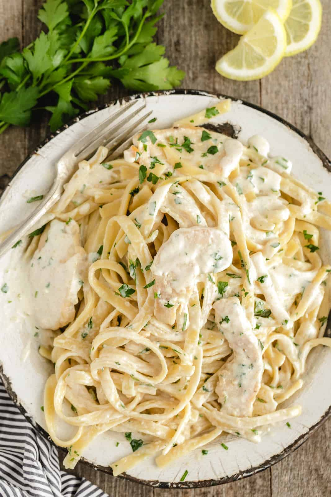

Chicken Alfredo

This Chicken Alfredo Recipe will keep you coming back for more!
This is probably one of my favorite chicken alfredo recipes. Not only is it quick in easy but it is not too heavy and you will have lots of leftovers to enjoy!
To get started, you will need some leftover chicken. I like to use leftovers here, because it cuts the cooking time by so much! You are welcomed to make chicken for this recipe or used leftover grilled chicken and even rotisserie chicken from the store. Let's get started!
Ingredients:
- grilled chicken or leftovers
- milk or half-and-half
- parmesan cheese
- fettucine noodles
- minced garlic
- parsley
- lemon juice
- flour
- butter
Steps:
-
Start by bringing six cups of water to a boil. Part boil your noodles until al dente.
-
To start with the sauce, take a large pan and put it over medium heat. Once it is heated up, drop in 2 table spoons of butter. When the butter is almost melted, drop in two table spoons of floor and mix.
-
Once the floor is mixed in and has turned into a paste, slowly whisk in milk or half-and-half into the pan. The amount of milk you decide to put in is up to you. I use about a cup or two. Mix well until sauce thickens and reduce heat.
-
Once the noodles are al dente, mix in minced garlic into sauce and add noodles. At this point, the sauce consistency may water down due to pasta water. This is okay! The sauce will continue to thicken as it mixes with the pasta water. You can add grated cheese (however much you desire) into the sauce and noodles. Once the cheese has desolved, add in the chicken.
-
Chop up some parsley and squeeze some lemon juice to combine with sauce and noodles. Serve with more parsley as desired and enjoy!